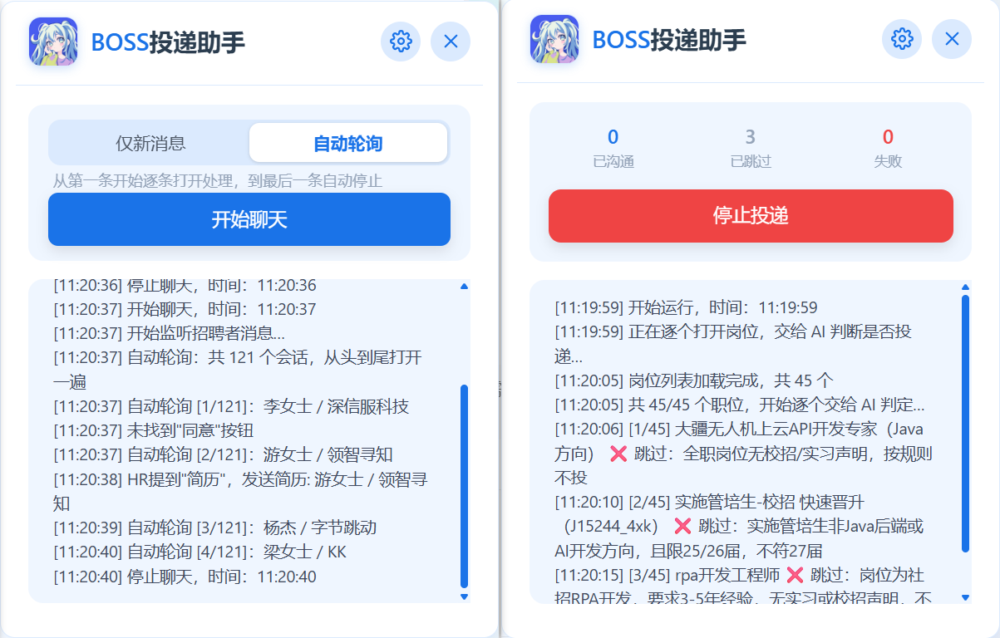

AI 智能判定
岗位要求、简历和投递要求一起交给模型，只对匹配的岗位发起沟通。
BOSS 直聘 · Tampermonkey 用户脚本
把岗位要求、简历和投递要求交给 AI 判断。
通过的岗位自动沟通，聊天页再按规则补发消息、发送简历。
需要 Chrome / Edge + Tampermonkey · 当前版本 v2.4.0

左：聊天页自动轮询 右：职位页投递与统计
FEATURES
从职位列表到聊天跟进，整个流程都在 BOSS 网页右侧面板里完成。
岗位要求、简历和投递要求一起交给模型，只对匹配的岗位发起沟通。
自动滚动收集卡片，逐个打开详情、抓取要求，通过后点「立即沟通」。
按会话列表顺序从头到尾逐条打开处理，到尾部自动停止，不再只盯顶部一条。
用自然语言写投递要求；{jobTitle}、{jobDescription} 自动替换。
QUICK START
不需要安装 Node.js，配置都在 BOSS 网页右侧的面板里完成。
在 Chrome 或 Edge 的扩展商店安装 Tampermonkey，然后打开管理面板。
从 Releases 下载压缩包，或把 boss-quick-apply.user.js 全文粘贴到 Tampermonkey 新建脚本里保存。
登录 BOSS 直聘，进入 /web/geek/jobs。页面右侧出现蓝色面板即安装成功。
填写 API 地址、API Key、模型名称，编辑投递提示词，保存后点「开始投递」。
GUIDE
几个关键规则决定了脚本会不会投、会不会发消息。第一次使用前建议完整看一遍。
脚本会先滚动收集当前列表里的岗位，然后逐个打开详情，读取岗位要求并交给 AI 判断。只有判定为匹配的岗位才会点「立即沟通」。
[3/20] 后端开发工程师 ✅ 通过：技术栈与经验匹配 [4/20] 销售代表 ❌ 跳过：销售岗不符合投递要求
没配 Key、网络失败或模型返回格式异常时，一律按「不投」处理。日志里的 ❌ 会说明原因。
设置 →「投递提示词」→「编辑提示词」。默认模板已经分好小节，只需要往「我的简历」「我的投递要求」里填内容。
投递要求可以直接用自然语言写，例如：
只投杭州或上海的岗位； 期望薪资 15k 以上； 技术栈以后端 Go / Python 为主； 不接受纯外包、外派。
模板里只有两个变量会被替换：
{jobTitle}
{jobDescription}
其它 {xxx} 不会被替换，会原样发给 AI。启动日志会提醒一次。
JSON 输出格式固定在 system 消息里，用户改不到；改坏它会导致所有岗位都判为不匹配，所以页面不开放这一层。
打开 /web/geek/chat 后，在面板里选择沟通模式，再点「开始聊天」。
每秒检查会话列表最上面一条，有变化时才处理。适合只接新会话。
按会话列表顺序从头到尾逐条打开处理，到尾部自动停止。
chatStore 时，会自动回退成「只看顶部会话」。「打招呼列表」是两段式的。脚本不会在职位列表页发送自定义招呼语，因为点「立即沟通」时 BOSS 已经用它自己的招呼语发出了第一条。
不一致、或者第 1 行空着时，脚本什么都不发，也不记账。想换招呼语，请同时修改 BOSS 设置页和列表第 1 行。
开启后，对还没有发过附件简历的 HR 自动发送。
需要先在设置里添加 JPG / JPEG 图片，再开启自动发送。
默认只记日志，不自动同意。需要时到「其他」里显式开启。
FAQ
确认地址是职位列表页（/web/geek/jobs 或 /web/geek/job）；刚安装脚本或更新后请刷新页面（Ctrl + F5）；再确认 Tampermonkey 里脚本处于启用状态。
先看面板日志。最常见的原因是没填 API Key、API 地址或模型名称不正确，或者 API 余额不足。设置页里可以用「测试连接」排查。
看日志里的 ❌ 理由。如果是「AI 判定失败」，检查 Key、余额、地址和模型；如果是「没抓到岗位要求」，换一个岗位或刷新页面再试；如果是「招聘者状态不在筛选范围」，到设置里调整「投递招聘者状态」。
确认已在 BOSS 设置页开启「打招呼语」。列表页没有可写入的 IM 输入框，脚本只会在详情区里找卡片自带的「立即沟通」按钮。
依次检查：打招呼列表第 1 行是否和 BOSS 网页实际发出的招呼语完全一致；当前会话最后一条我方消息是否就是第 1 行；第 2 行及以后是否填写了内容；聊天页是否已经点「开始聊天」。
普通设置要点底部「保存设置」；AI API 配置要点「保存 API 配置」；提示词要在弹窗里点「保存」。三类配置是分开落盘的。
职位页点「停止投递」，聊天页点「停止聊天」；关闭或刷新页面也会停止当前任务。卸载时到 Tampermonkey 管理面板找到「BOSS投递助手」删除即可。
这是一个本地运行的浏览器用户脚本。自动化操作有边界，也有风险。